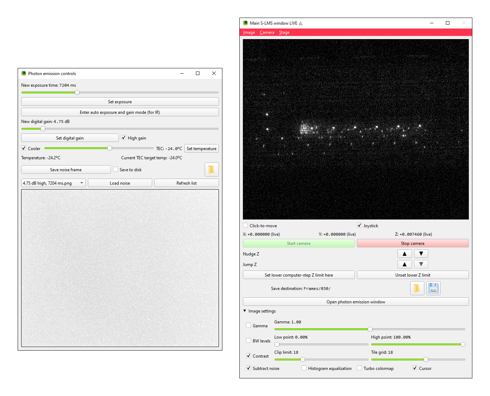
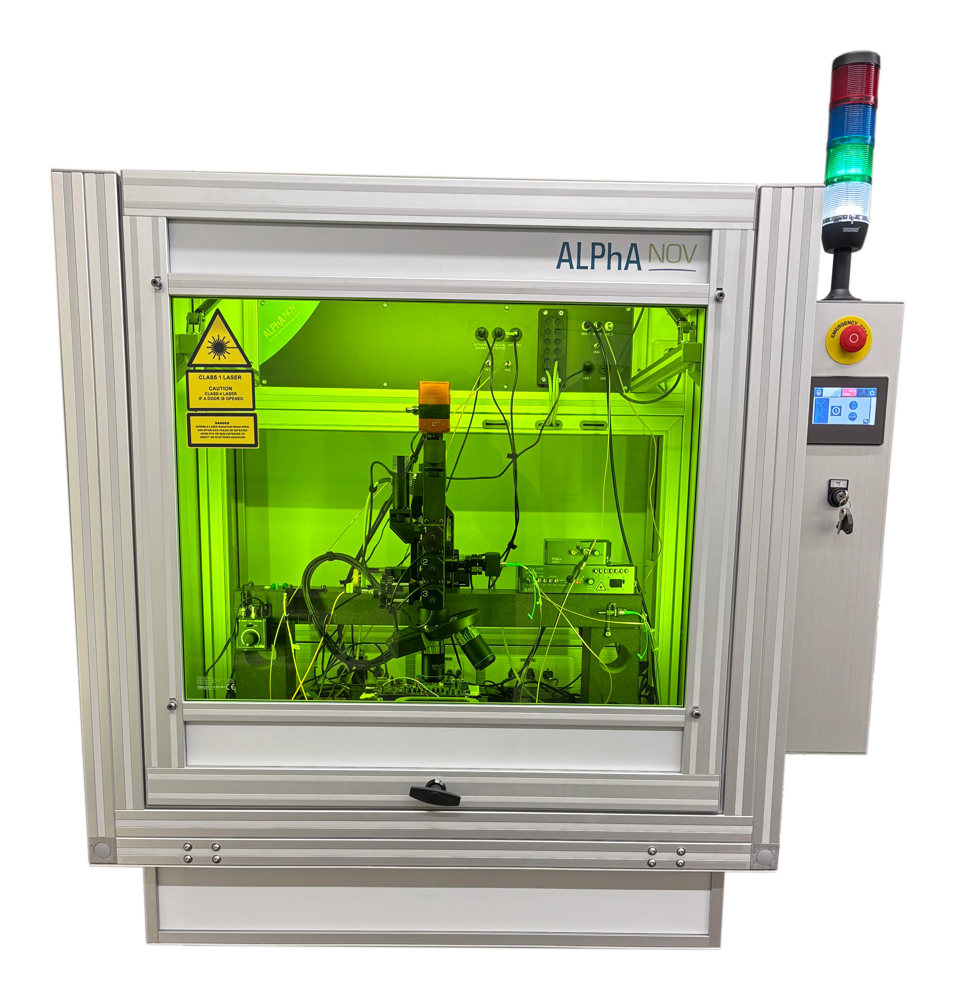
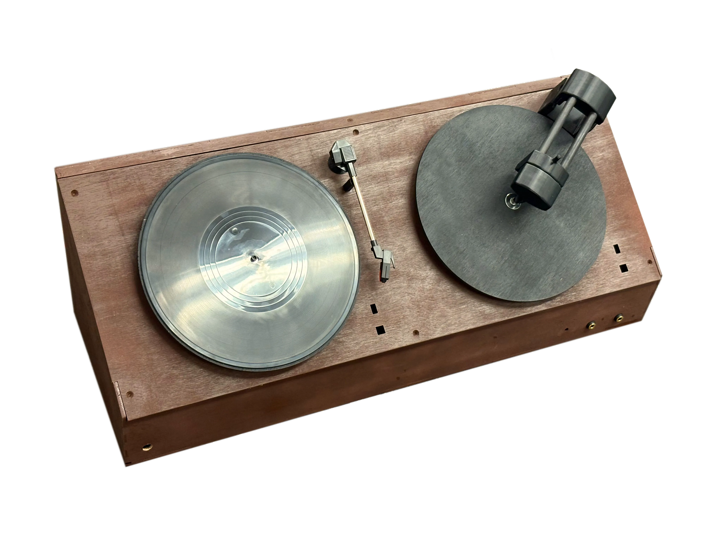

Here are three of my recent projects. Also remember to check out my my resume and connect with me on LinkedIn.
Over my last winter break, I independently developed software to synthesize and run users’ Verilog code on-screen on “virtual boards.”
This lets instructors enagingly teach synthesizable code without needing to buy boards for students. In addition to emulating the small devkits that would be used at a school, the program supports more complex boards, like a calculator and an LCD-style game board.
Shown below are two of my boards running programs students could realistically write for course assignments (tap them to pause/play):
On course staff for ECE2029 (Introduction to Digital Circuit Design), I helped ~120 students install and use the software for all of their lab assignments,. Multiple professors are interested in using the software again, and I am continuing its development in my free time. I have since updated it to let instructors easily make new boards for assignments.
Read more about my FPGA board simulator here.
For my CS-ECE capstone project at WPI, I developed new software for the Vernam Lab’s ALPhANOV S-LMS microscope. My application streamlines the process of capturing photon emission images for hardware security analysis.
Photon emission images map brightnesses to the switching frequencies of transistors, and can reveal the structures active in a digital circuit. For example, a running counter has a recognizable “ramping” PE gradient: from the least significant to the most, each bit will flip half as often as the last.
I took over development from a previous team and produced a complete GUI to succeed their terminal-based app. My software lets users easily take photon emission photos, with in-UI subtractive denoising and contrast adjustment. It includes the core features of the manufacturer’s software while being more stable and intuitive to use. It adds image filters, a click-to-move feature, easy frame exporting, and more.
 |
 |
During active development, I worked closely with another team to research the vulnerabilities of an FPGA-based LLM accelerator to photon emission inspection. We used the software to perform a proof-of-concept extraction attack, mapping weights to emission patterns. Our projects’ joint video won first place in the ECE department’s competition.
For my humanities capstone project, I worked on a team to make a piece for the Waukesha County Historical Society & Museum, which has a large Les Paul collection.
Les Paul pioneered overdubbing, which he called “sound on sound.” An early technique he developed was to record onto one lacquer disc, then play it back and mix it with live audio onto a second disc. We designed a working facsimile of a phonograph and a lathe for live demos of this method.

One of my contributions to the project was the idea to include multiple fake record discs, each with a sticker of a different color. The demonstrator will move discs back and forth, providing a clear visual for spectators, while they actually control it via disc selector dials and on/off switches on the back. Motors on the turntable and lathe rotate the discs when they are active, and LEDs under each component light up with the color of the currently selected discs to further reinforce the visual.
I also wrote the code for the project, running on a Daisy Seed. The components we needed took a long time to arrive, so I did not have time during the term to complete the implementation of the LEDs/motors and input from the external controls, but it will be a quick job for a future group to finish the device. I produced a full prototype of the core overdubbing behavior, testing it using a Daisy Pod’s built-in controls.